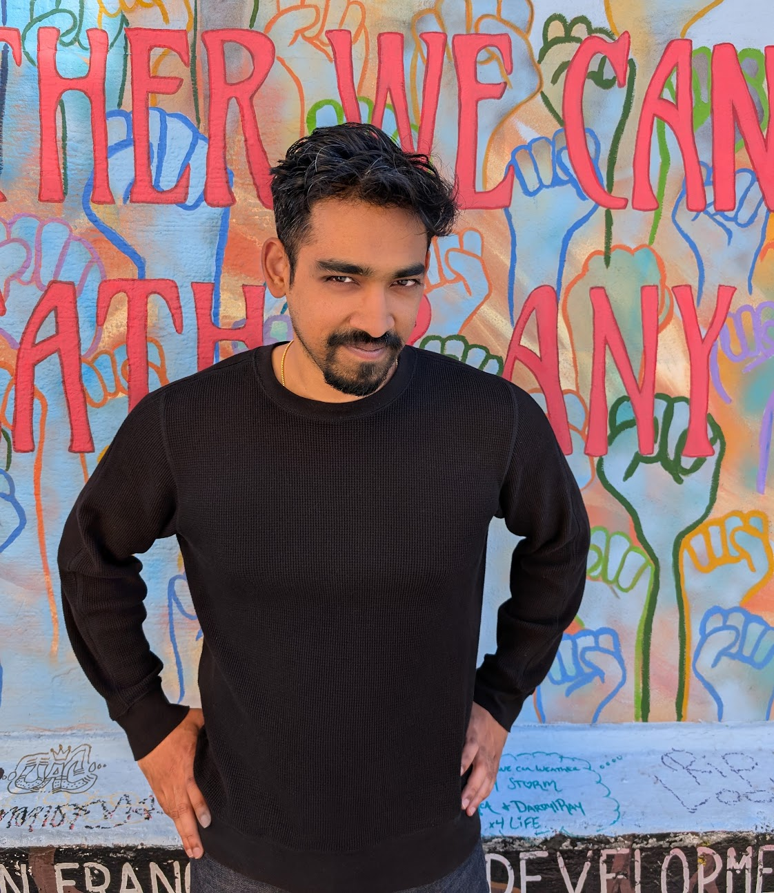

Gautam Goel

I am a postdoctoral researcher at the Simons Institute for the Theory of Computing, where I am part of the Machine Learning Pod. In 2022 I earned a Ph.D. from Caltech under the supervision of Prof. Babak Hassibi.
Research Interests: Deep learning theory, especially optimization dynamics and fast optimization algorithms; nonconvex optimization; uncertainty quantification; online learning; optimal control.
Contact: ggoel@berkeley.edu